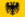

De: La Frikipedia, la enciclopedia extremadamente seria.
De: La Frikipedia, la enciclopedia extremadamente seria. De: La Frikipedia, la enciclopedia extremadamente seria.
| De la serie conflictos armados: | ||||
| La Guerra de los Treinta Tacos | ||||
| ||||
| Lugar y fecha | Europa (1618 - 1648) | |||
|---|---|---|---|---|
| Bandos | Protestones | Católicos | ||
| Fuerzas | Suecia Dinamarca Noruega Provincia Unidas 24px Bohemia Imperio Gabacho Transilvania |
 Sacro Imperio Baviera Austria | ||
| Comandantes | Rebeldes sin causa 25px Cristián IV Sr.Neutrógena Mauricio de Nasau 24px Federico V Richelieu y compañía Vlad Tepes |
Católicos Albrecht von Frankenstein Gambrinus Arnold Schwarzenegger | ||
| Armas | Armas 25px Mosquetes "mata-católicos" Trabucos de calidad Mercenarios pardillos a punta pala 24px Bohemios (¿qué si no?) Mosqueperros del Rey Hordas de vampiros |
Armas Grandes espaderos en decadencia Piqueros borrachos Mucha gente con poco carisma | ||
| Bajas | Resultados | Resultados | ||
| Resultado | Paz de Westfalia | |||
La Guerra de los Treinta Años fue un conflicto armado que tuvo lugar en Europa por el pique entre protestones y católicos entre 1618 y 1648. Aunque en principio era una peleilla de caracter religioso a mucha gente le dio por meter el hocico para sacar tajada y destrozar el viejo continente, dejando Centrouropa como si acabase de pasar por ahí una macro-boda gitana: hecha un desastre.
Para darse de hostias hasta durmiendo no les bastó con sus gigantes ejércitos, no, sino que tuvieron que pagar a otros para irse a pegar leches a lo largo y ancho del Sacro Imperio.
Resulta que en el siglo XVI se habían firmado varios acuerdos sin mirar muy bien lo que decía la letra pequeña. La Paz de Augsburgo era uno de esos tratados, el cual daba derecho a los luteranos (seguidores de Martin Luther King I) a ser luteranos, además de poder convertirte en luterano y marcar la casilla del 0'7 de la declaración de la Renta a Lutero. Pero la Paz de Augsburgo no era muy pacífica (valga la redundancia), e hizo que todos los obispos se pusiesen a llorarle a los luteranos para que se convirtiesen al catolicismo. Como no quisieron, los obispos vieron en el tratado un buen rollo de papel para limpiarse el culo y se fueron por ahí a quemar cosas de luteranos, como las 95 tesis (la gran lista de la compra que Lutero dejó en la catedral de Wittenberg y se convirtió en su best seller). Para colmo los calvinistas, que adoraban a Lobato, se habían puesto por ahí a gritar muy fuerte, cuando los que de verdad querían gritar a pleno pulmón eran los "católicos 100%"; en resumen, más leña al fuego.
Para colmo, en Europa había muchas ambiciones. Felipe II, monarca de las Españas, quería para sí el Sacro Imperio porque era un coñazo tener que estar pagando peajes para irse a sus dominios en Flandes unos días a hacer topless en la playa matando herejes. El Cardenal Richelieu, títere de Francia, deseaba pararle los pies a los Habsburgo para evitar que se acabase bailando "la Macarena" en Amiens y, de paso, conseguir algunas perras para irse a tomar alguna copichuela por ahí. Por último, había algunos reinos, hasta entonces sin importancia, que ansiaban las costas para llevarse a la familia en verano y navegar en patín por las playas del Báltico.
Y si las altas autoridades eclesiásticas estaban que trinaban, a los emperadores germanos (tanto a Rodolfo II Chiquilicuatre como a su hijo Matías el humilde) el asunto le tocaba más bien los huevos ya que preferían estar en el sofá con el aire acondicionado a tope viendo el furbo y bebiendo cerveza. Ellos, más bien libegales, preferían fusión de culturas, mestizaje y demás inventos de Zetapé. Como ni un emperador hacía nada para parar a los protestones de Alemania, surgieron varias bandas skinheads que se dedicaban a linchar a estos "amigos del libertinaje". Se acojonaron tanto que se juntaron y formaron la Liga de la Justicia Protestante. De esta forma iban todos de la mano por la calle, con alguna persona mayor al lado y ya ni les pegaban cachetes ni nada. Entonces fue cuando los católicos dijeron: "¡yo también quiero!" y, en un alarde de originalidad, fundan la Liga Católica, liderada por Maximiliano de Baviera, un tabernero que había llegado a estadista, mientras que la Liga Protestante estaba bajo el mando de Federico IV, un principito del Palatinado.
Pero los problemas se acrecentaron, llevando a Europa entera a una guerra, cuando a un tal Fernando II le llegó una carta diciéndole que ahora era emperador del Sacro Imperio y (sólo para que se comiera un marrón) rey de Bohemia. Resulta que en Bohemia todos eran calvinistas fumaporros y el plato favorito de Fernandito era el protestante al ajillo. Podéis imaginar el mal rollo que había entonces por la zona. Resulta que los bohemios querían a Federico V del Palatinado.
Fernando II se olía la tostada y en primavera de 1618 mandó a dos emisarios, Martini y Slavata, para preparar la recepción del hotel donde se iba a montar uno de sus conciertos de Rock&Roll que acababan en orgías. De repente, unos calvinistas malos que no habían sido invitados, hasta el culo de sangría Don Simón de tetrabrik, les cogieron desde un tercer piso y los lanzaron hasta una montaña inmensa de mierda sobre la que cayeron los emisarios y unos prebostes que iban pegados a ellos todo el rato. A este hecho se le conoce como "Segunda Defenestración de Praga", y se ve que es una tradición por la zona. Esta inocentada hizo que Fernando II desenvainase el sable y dijese: "Se van a enterar de quienes van a acabar ahora sobre la mierda..."
Como veían que una gran guerra era inminente, tanto protestones como católicos buscaron aliados hasta debajo de las rocas. Los primeros encontraron apoyo en los Países Bajos que aportarían unos cuantos decadentes y coloridos lansquenetes, también los bohemios ayudaron con un pequeño ejército de beatniks calvinistas; posteriormente a los protestantes se les unirían los nórdicos que, pese a ser hasta el momento unos vikingos cansados de ver fiordos hasta en la sopa querían aparecer en enciclopedias como la nuestra, además de unos franceses que querían pegarles a los españoles unas cuantas tollinas en el campo de batalla; a la postre, los transilvanos también ayudaron con su Guardia Chupasangre". Mientras tanto, Fernando llamó al travieso de su sobrino Felipe III, rey de España sin muchas neuronas, que se divertía tocándole el bulto a los criados. También se unieron al grupete de los católicos los austriacos (a esos te los ganas con poco) y a los de Baviera, los cuales firmaron la alianza militar después de haberse tomado doce cervezas el gran Maximiliano, que aceptó "engandado".
Al principio ganaban los bohemios porque, en algunos lugares de Austria y por ahí aficionaron a la gente a la marihuana. Fue entonces cuando el conde Buqcuoy (sí, está bien escrito) iba recogiendo firmas contra la prohibición cuando, de repente, se encontró a las tropas protestantes en la Batalla de Slabat, por junio de 1619, en la cual las tropas imperiales del Buqcuoy (unas cuantas decenas de miles) se abalanzaron sobre cuatro calvinistas. Después de la masacre y de pasarlos a todos a cuchillo varias veces una vez muertos, el conde se dio cuenta de que eran niños...pero bueno, no hay mal que por bien no venga, ¿no? Ya por agosto, los bohemios mandaron a Fernando a tomar por el ojete y pusieron a Federico V, que se lo pasaba muy bien metiéndose rayotes de farlopa sentado en el trono.
Y en esta escena es cuando se meten los españoles vamos, ¡nosotros! (si eres sudaca de nuestras colonias siéntete también orgulloso). Por entonces, a España no le gustaba sacar a los tercios del garaje tanto como los sacó hace un siglo así que, al principio, fueron sobornando hasta en las papelerías. El ministro de "Sobornos Exteriores" de esos tiempos era Íñigo Oñate (apodado "Súper eñe"), que acababa de darle a Sajonia un bocata de mortadela a cambio de retirarse; por supuesto, los sajones aceptaron encantados mientras un mosquete les apuntaba al cráneo. También apareció en la contienda Ambrosio Spinola, famoso cantautor y experto en temas de guerra contra el libertinaje protestante. Ambrosio era famoso por dirigir los ataques y asedios mientras tocaba la guitarra a ritmo de folk, luego hablaremos de él.
A partir de aquí, los protestantes fueron cayendo como petanca, dar de comer a los patos, desintoxicarse y poco más. Aprovechándose de la situación, las tropas imperiales robaron todas las tierras que pudieron: desde el chalet del Palatinado, cerca de Marina d'Or, hasta el bono del autobús de Federico. Si a la derrota protestona le sumamos que a los vampiros no les gustaba mucho la sangre hispánica (sangre + calimocho = asco), lo que supuso la rendición de Transilvania en 1621, podremos ver a simple vista que la victoria imperial era inminente, si no fuese porque a la fiesta se acoplaron los países nórdicos y los (¡aghs!) franceses.
Si por algo Dinamarca se metió en medio a guerrear fue porque su rey, Cristián IV estaba ya cagadísimo de sólo pensar que, si los católicos ganaban la guerra harían de su país (protestante todo él) picadillo de carne, cenizas de barbacoa y demás. En sus pesadillas aparecían tropas imperiales asolando los fiordos, saqueando Media Markts y no dejando propina en las cafeterías. Como no quería que eso sucediese (ni mucho menos) Cristian mandó una horda de más de 20.000 muchachos con mosquetes, picas y todo.
Pero resulta que algún chivato le había dicho a Fernado que le iban a atacar, por lo que llamó al mejor militar que tenía al alcance, conocido como Frankenstein Wallenstein, Albrecht von Wallenstein. Wallenstein era un macho-men, de estos que no se quitan los calzones en dos meses y se duchan en tres años. Enfadado todo el día porque a la gente no le gustaba la mierda que componía (sí, el jodío era poeta), estuvo a veces al borde del suicidio, aunque lo acabó superando a base de lingotazos de tequila. El caso es que Fernando le dijo que quería que le trajese un ejército, y quedaron, pero Wallenstein se retrasaba. Por suerte, al final se los llevó, una gran fuerza, equipada hasta con cascos de moto y lanzallamas. Por su lado, el ejército danés era un desastre: ni sabían a que se enfrentaban, les habían dejado solos y ni les quedaba un paquete de Malboro para suministrar a las tropas. Mientras por su lado el general imperial Tilly iba venciendo, el general Mansfeld, dirigente de las tropas danesas, se encontró con un puente en lo primero que pensó es tirarse al río; No le dio tiempo porque al frente tenía al ejército de Wallenstein. La batalla fue facil y las tropas imperiales vencieron en la batalla del Puente de Dessau. Como a partir de aquí, los hombres de Wallentein fueron conquistanto ciudades y metiéndoles los mosquetes a los daneses por el esfínter, Cristián firmó una paz y se fue a dormir al suelo del granero con algo de paja como castigo de sus compatriotas por dejarles en ridículo ante toda Europa. A aprtir de aquí, el rey de Dinamarca se encargó de quitarle el polvo a los muebles, limpiar la cocin, los baños y ser ridiculizada en la reuniones de la Unión Europea. A lo tonto a lo tonto habían pasado cuatro años más de guerra (1625-1629)
Mientras tanto, los suecos están cagadísimos y deciden entrar en la guerra al lado de los protestantes. Gustavo II Adolfo Bécquer, rey de Suecia y criador de koalas, se dedica a formar un gran ejército reciclando a los manguis y gitanillos de los barrios periféricos de Estocolmo y convirtiéndolos en fríos mosqueteros capaces de acabar con varios regimientos católicos en pocos segundos. Los suecos se hicieron famosetes por innovar el modo de hacer la guerra, llegándo hasta el punto de venderlo en la teletienda. El nuevo sistema bélico introdujo a jinetes más ligeros de ropa (ejem, sin armaduras, me refiero...) y apoyados a su vez por unos cuantos mosqueteros que les seguían por detras pisando las caquitas de sus potros.
Así partieron los suecos hacia Centroeuropa, preparadísimos y muy disciplinados. Todos los soldados del ejército tenían que rezar al Diablo (o a lo que recen esos malditos calvinistas) bajo pena de quedarse sin cabeza, extremidades y chorra. Cada unidad disponía, además de sus armas básicas, de un colador, un mechero "Zippo" con el dibujo de una manzana y de un diccionario "Sueco-Català" para entenderse con alguien en caso de perderse y acabar en Las Ramblas. Ya en la guerra, en 1931 vencen a los católicos en la batalla de Breitenfeld al pillar por sorpresa a los Stormtroopers imperiales. En esta contienda los protestantes apenas fueron heridos (uno se torció un tobillo y a algunos más se les puso Betadine y una tirita) mientras en el bando contrario hubo más de diez mil muertes. Esta fue una prueba de que el general católico Tilly era un inútil, llegando a morir al año siguiente tras jugar al FIFA durante veintinueve horas seguidas, por lo que el gran estratega Wallenstein, que estaba de vacaciones en Punta Cana, volvió a la rutina (matar hippies - descansar - matar hippies - descansar...) alegremente. Ya con Wallenstein las cosas se torcieron a favor de los imperiales, pues en la batalla de Lützen moría el monarca sueco de un garbirote en el esternocleidomastoideo y sus soldados serían derrotados dos años más tarde en Nördlingen (1634) por los malvadísimos tercios hispánicos.
Ya por simple aburrimiento, ambos bandos decidieron firmar una tregua que, al parecer, sólo les gustó a ellos ya que los franchutes (que nos tienen una manía impresionante) empezaron a hacer uso de la llamada "Leyenda Negra" desprestigiando hasta a nuestra hermosa paella y provocando la reanudación de la guerra en 1636 (ayyy).
Es sabido por todos la envidia que nos tienen los franceses por ser España un país más divertido que el suyo. Como querían tener al Imperio Español bajo su poder, decidieron aliarse con los protestantes. En 1936, España se encabrona y entra a saco en Francia con rumbo a París. Tienen lugar bastantes batallas en las cuales siempre empatan. Muertos el rey de Francia y su hombre de armas, el Cardenal Richelieu, el sucesor de este último, el Cardenal Manzarino intenta pacificar Europa creando torneos de futbolín que, desgraciadamente siempre acababan en un duelo de los de florete y pistola.
A partir de 1943 España empieza a decaer; Tiene lugar ese mismo año la batalla de Rocroi, donde los tercios del Capitán Alatriste fueron atravesados cual pincho moruno por las picas gabachas. No sólo hubo derrotas hispánicas, pues también los protestantes fueron vencidos en la espectacular batalla de Nördlingen, dirigida por Steven Spielberg, en la cual los católicos ganaron gracias a los pícaros españoles que robaron a punta de navaja a esos endemoniados calvinistas sacándoles hasta el bonobús.
Una vez muerto Richelieu, quien empezó a mandar fue el Cardenal Mazarino, el cual dió a sus soldados unas pirulas de vitaminas y así los gabachos fueron ganando batallas, conquistando y poniéndolo todo patas arriba, además de colocar servicios de pago en toda Europa.
Como todas las batallas acababan en empate se lo jugaron al ajedrez, pero acabaron en tablas. Posteriormente se lo jugaron a penaltis, pero acabaron a arcabuzazos. Optaron también por el juego de la ruleta rusa, pero los mosquetes no tenían barrilete para más de una bala. Al final se decantaron por firmar con sangre un tratado que recibió el nombre de Paz de Westfalia.
La Paz de Westfalia decía, a grandes rasgos:
Como los firmantes estaban puesto de porros hasta las trancas todo esto les pareció bien. Pero por si acaso se empezaron otra vez a armar.
La más importante (para la mayoría de los lectores, al menos) era el hecho de que España se rompía en pedacitos. Pero no con estatuts y cosas por el estilo, sino a golpe de cañones: en Sudamérica, los ancestros de Hugo Chávez si iban preparando cada vez más para proclamar su independencia, la nacionalización de Repsol y la posesión de uno de cada cuatro árboles del Amazonas. Luego estaba Portugal, que le entraron ganas de hacerse independiente y así les va. Además, nuestros tercios, el orgullo de nuestra patria, ahora estaban compuestos por becarios inútiles que llevaban cafés fríos de aquí para allá.
En resumen, toda Europa se quedó hecha una basura. Esta guerra sería la causa de la creación de "Mira quien baila", el fracaso de Frenando Alonso y del hundimiento del Prestige. ¡Toma ya!
Autor(es):